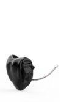
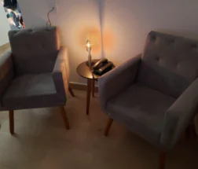
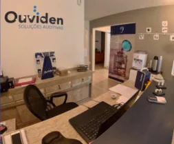

Ligue: (11)9 1609-3631
Ligue: (11)9 1609-3631


Microcanal (CIC)
Apenas o minúsculo cabo de remoção do aparelho auditivo aparece fora do canal auditivo.
Microcanal invisível (IIC)
Encaixa na segunda curva do canal auditivo onde ninguém consegue enxergá-los.
Receptor no canal (RIC)
Pequeno, discreto e rápido de adaptar. Perfeito para a primeira experiência com aparelhos auditivos.
Tipos de Aparelhos Auditivos
Estes são apenas alguns tipos de aparelhos auditivos. A Ouviden trabalha com as mais variadas tecnologias voltada para cada tipo de necessidade, sempre preservando características como durabilidade, funcionalidades, eficiência, estética e conforto.
DIGA ADEUS ÀS PILHAS
A novidade do momento são os aparelhos auditivos recarregáveis. Este aparelhos, além de toda a tecnologia já presente, tais como: ajuste remoto, conexão com aplicativo, ajustes dinâmicos para melhora de entendimento de fala, possui também versões com bateria interna recarregável.
Distribuidor:
Ouviden em Santo André, São Paulo
Visite a nossa unidade Ouviden em Santo André, São Paulo. Encontre soluções completas em aparelhos auditivos, acessórios para aparelhos de audição, manutenção de aparelhos , pilhas e baterias para aparelhos auditivos, exames audiológicos, audiometria.


Conte com a Ouviden na Cidade de Santo André - São Paulo, para Exames e Serviços de Audiologia. Além de trabalhar apenas com Aparelhos Prêmiados no Mercado.
O zumbido no ouvido, também conhecido como tinnitus, é uma percepção sonora que ocorre na ausência de uma fonte sonora externa. Pode se manifestar como um ruído constante, zumbido, chiado, apito, clicar ou outros sons incomuns. O zumbido pode ser percebido em um ou ambos os ouvidos e pode variar em intensidade e frequência.
A perda auditiva é uma redução na capacidade de ouvir sons em uma ou ambas as orelhas. Existem diferentes tipos de perda auditiva, incluindo:
- Perda Auditiva Sensorioneural: Isso ocorre quando há danos nas células ciliadas do ouvido interno ou no nervo auditivo. Pode resultar em dificuldade em ouvir sons suaves ou em tons específicos.
- Perda Auditiva Condutiva: Isso ocorre quando há problemas na condução do som do ouvido externo para o ouvido interno. Isso pode ser causado por obstruções no canal auditivo ou problemas nos ossículos do ouvido médio.
- Perda Auditiva Mista: Isso envolve uma combinação de perda auditiva sensorioneural e condutiva.
- Causas Compartilhadas: Tanto o zumbido no ouvido quanto a perda auditiva podem ter causas compartilhadas. Por exemplo, o envelhecimento, exposição prolongada a ruído alto, infecções do ouvido e lesões na cabeça podem contribuir para ambas as condições.
- Zumbido como Sintoma de Perda Auditiva: Muitas vezes, o zumbido é um sintoma associado à perda auditiva sensorioneural. Isso ocorre porque a lesão das células ciliadas do ouvido interno pode resultar em zumbido, já que o cérebro interpreta erroneamente a ausência de estímulos sonoros como um som.
- Agravamento Mútuo: Em alguns casos, o zumbido e a perda auditiva podem se agravar mutuamente. Uma perda auditiva preexistente pode tornar o zumbido mais perceptível, uma vez que a falta de estímulos sonoros externos permite que o zumbido seja mais proeminente. Por outro lado, um zumbido intenso pode dificultar ainda mais a audição, interferindo na capacidade de uma pessoa perceber sons externos.
O tratamento do zumbido e da perda auditiva pode ser interligado. Quando a perda auditiva é a causa subjacente do zumbido, o uso de aparelhos auditivos ou implantes cocleares pode ajudar a melhorar a audição e reduzir a percepção do zumbido. Além disso, algumas terapias de reabilitação auditiva podem ser eficazes no gerenciamento de ambos os sintomas.
Em resumo, embora o zumbido no ouvido e a perda auditiva sejam condições auditivas distintas, eles estão frequentemente interligados, compartilhando causas comuns e tendo um impacto significativo na qualidade de vida das pessoas afetadas. É fundamental que qualquer pessoa que experimente esses sintomas procure um profissional de saúde auditiva para avaliação, diagnóstico e tratamento adequados, já que o tratamento precoce pode ajudar a melhorar os sintomas e a qualidade de vida.
Lojas de Aparelhos Auditivos Ouviden
A Ouviden possui lojas de serviços e aparelhos auditivos em São Paulo - Moema, Atibaia e no ABC, na cidade de Santo André. Todas as lojas estão possuem fonaudiólogas capacitadas para realização de testes e exames auditivos, tanto na loja, quanto em domicílio.
Ouviden no ABC, Santo André
Some quick example text to build on the card title and make up the bulk of the card's content.
- An item
- A second item
- A third item
Ouviden em Atibaia, SP
Some quick example text to build on the card title and make up the bulk of the card's content.
- An item
- A second item
- A third item
Ouivden em Moema, São Paulo
Some quick example text to build on the card title and make up the bulk of the card's content.
- An item
- A second item
- A third item